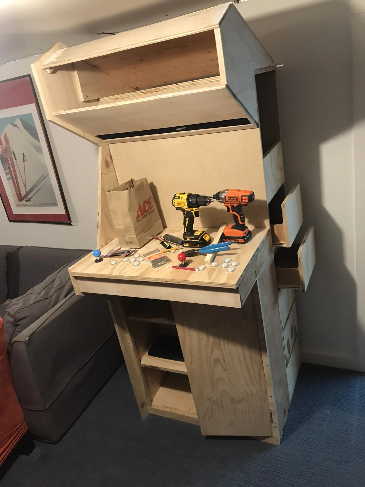

Remote-controlled Hot Wheels
A miniature RC car designed from scratch, complete with tank steering and its own charging case.
A Raspberry Pi arcade cabinet built with my brother from inexpensive wood and a repurposed monitor.

We sourced inexpensive wood and built an arcade cabinet around a Raspberry Pi and a repurposed PC monitor. Unlike my other original projects, this cabinet used a design we found on YouTube.
We drilled the control panel for joysticks and buttons and connected them to an IPAC 4 board. The interface translated the controls into keyboard inputs for the Raspberry Pi.
The project brought together cabinet construction, wiring, and setup in a finished object we could actually use. It was completed by March 2022.
Select any photo to open the full-size gallery.


A miniature RC car designed from scratch, complete with tank steering and its own charging case.
From lettuce in repurposed containers to shelves of automatically watered microgreens.